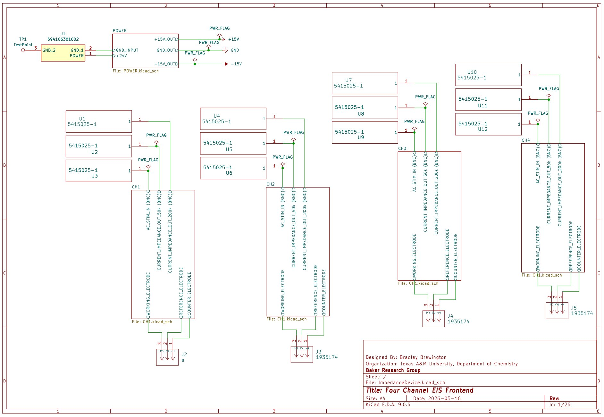
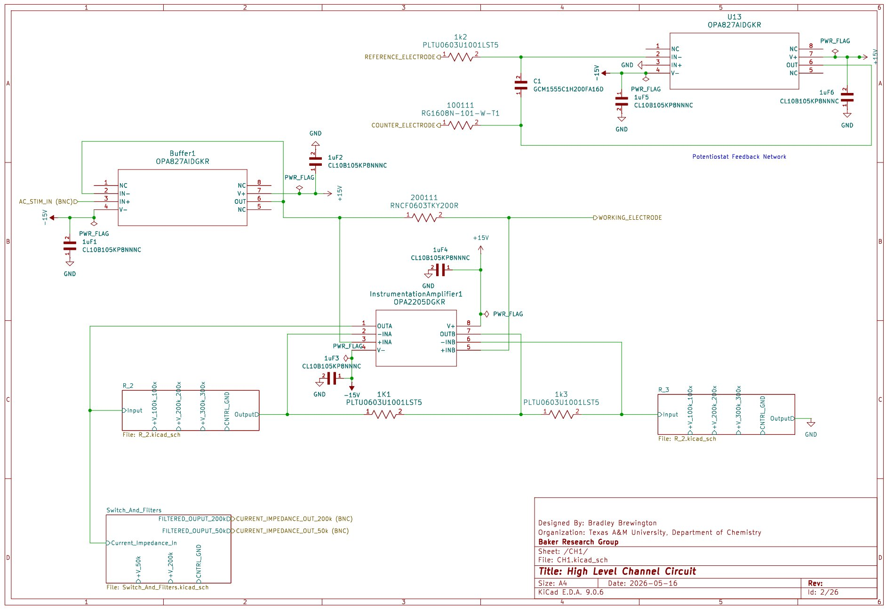
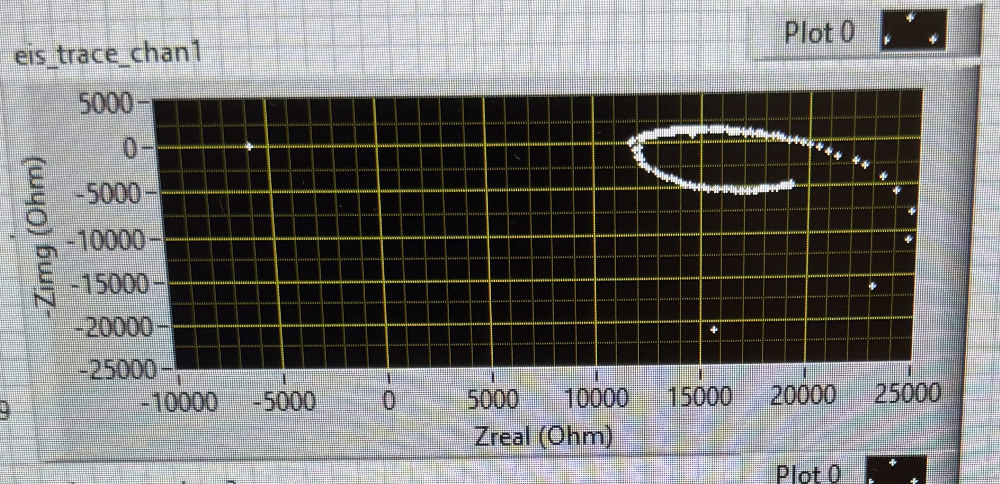
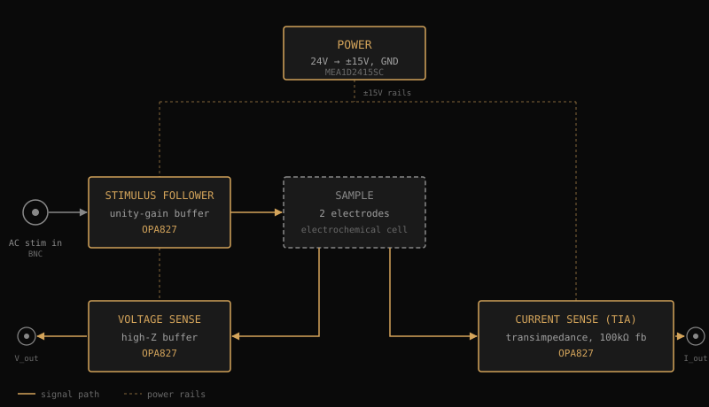
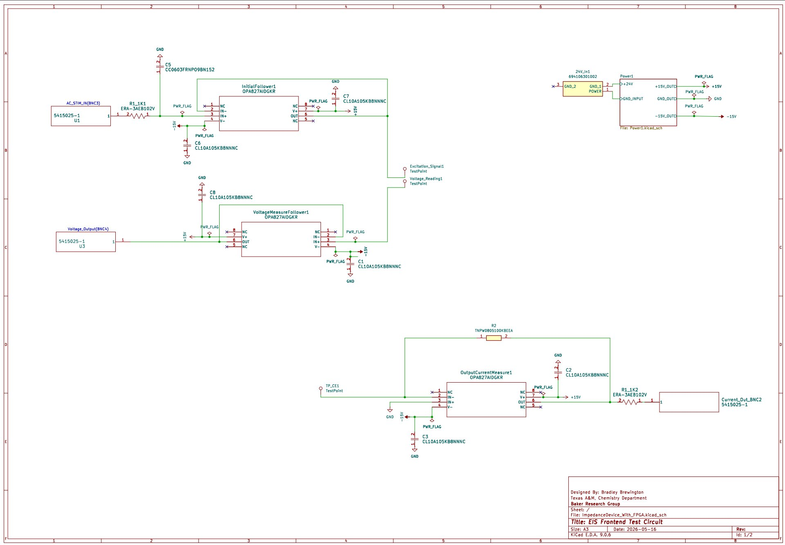
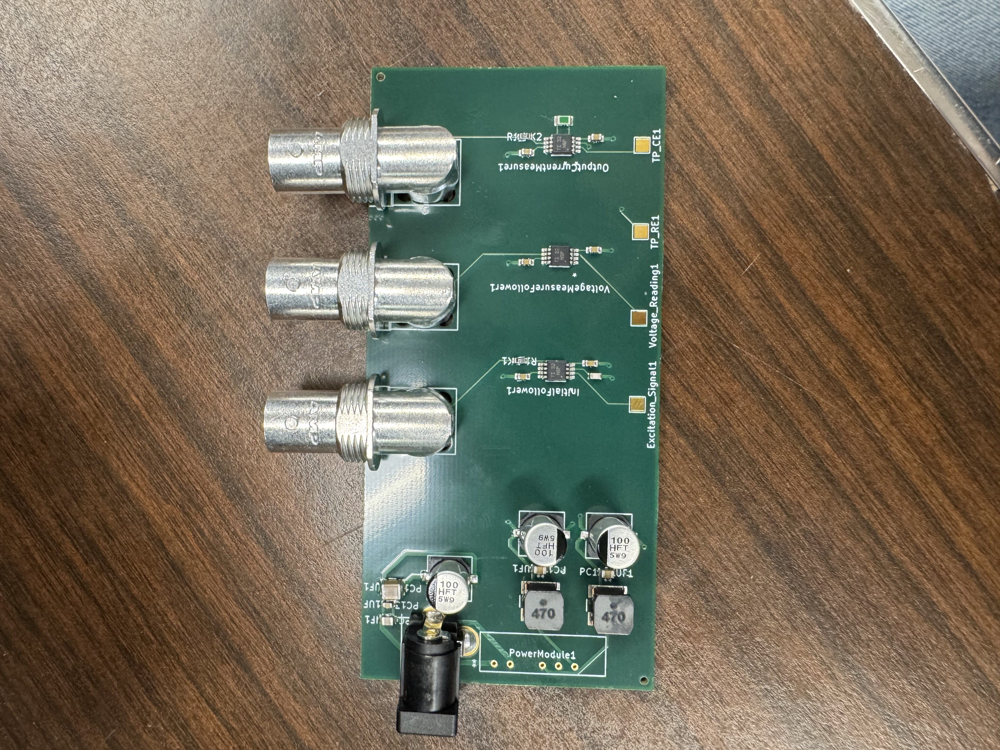
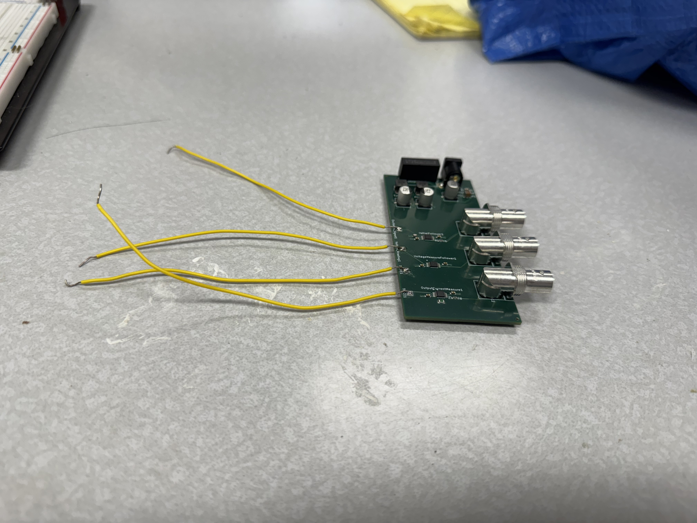

Precision EIS instrumentation
Custom mixed-signal hardware for electrochemical impedance spectroscopy on cell samples. A 4-channel header circuit with programmable gain and switchable filtering, designed in KiCad. A single-channel breadboard prototype, then a single-channel test PCB. Most of the project ended up being the debug effort that followed.
- Timeline
- April 2024 — May 2026
- Role
- Component selection, schematic capture, PCB layout, prototyping, debug
- Tools
- KiCad, LTSpice, CH Instruments electrochemical workstation, bench instrumentation
- Status
- 4-channel design complete; single-channel test PCB operational; inductive artifact corrected in post-processing
Context
I worked under PhD students and assisted with electronic development and debug efforts. Working in a research lab meant solving problems with no established playbook: no one had a ready-made answer, and every task I was given was something I had never done before. Poring over datasheets to find the right component, teaching myself KiCad, consulting with professors to help design filters.
First task: a Bessel filter
When I was hired, my first task was designing a Bessel filter for their work, because Bessel filters cause minimal phase shift across the passband. That matters in EIS, where the phase of the impedance is half of what's being measured.
Once that was complete, my supervisor would describe certain behaviors and requirements and I would find an IC that matched what he described. When he was satisfied with what I had found, he tasked me with the next piece. That working pattern set up the rest of the project. Every op-amp in the final design was chosen this way.
The 4-channel header circuit
My next task was to design a 4-channel header circuit to interface between the FPGA and the cell samples. Having never designed a PCB, I decided to work in KiCad because the learning curve was less steep than with Altium.
The circuit needed programmable gain and switchable output filtering on each channel. Each channel has a potentiostat front end (OPA827 buffer into an OPA2205 instrumentation amplifier), a transimpedance stage with four selectable feedback values from 100x to 400x gain, and two parallel Bessel filter paths (50 kHz and 200 kHz) at the output. Gain selection uses a string of 100k feedback resistors in series with switches across each one: shorting all but one gives 100x gain, shorting none gives 400x. Switching between gain settings and filter paths is done with TLP3250 solid-state optocoupler relays rather than physical switches, so the control signals stay isolated from the analog ground and out of the measurement.
Because the current had to be kept low to avoid damaging the cells, every component had to be carefully selected to keep the noise floor below what would disrupt accurate measurements. Designing this circuit while learning KiCad at the same time was a challenge.


Single-channel breadboard prototype
Before committing the 4-channel design to fab, we built a single-channel breadboard prototype to verify the topology on real hardware. We tested it on a known load: a resistor in series with a resistor and capacitor in parallel. The expected shape on the Nyquist plot should be a semicircle. Our semicircle had a "tail" that dropped below the real axis, indicating unexpected inductance.

The 4-channel board was never ordered. The full design stayed on paper, and the single channel became the focus.
Single-channel test PCB
To rule out the breadboard itself as the source of the inductance, I implemented the same circuit as a PCB. The test board isn't a direct subset of the 4-channel design. It's a simpler topology built around the same signal-chain components: the shunt resistor sits after the cell rather than before, and there's no programmable gain or filter switching. The point was to validate the analog signal chain on real silicon, not to recreate the 4-channel design at smaller scale.




The artifact was still there. Not the breadboard.
Debug
When faced with a challenge without a clear solution, I learned various techniques to find one. Often, the first step is to find a paper or project that solved a similar or adjacent problem. That is a starting point, but then the real work begins.
Debugging the inductance artifact drove home the importance of documentation. Without keeping a record of what was attempted, I would find myself rerunning the same test. Keeping a log of tests and marking each tested component became standard practice. When a complex system is not working, you have to break it into its most basic components and verify each one. Otherwise, you cannot pinpoint the exact source of the error.
First, we shortened the connecting wires from the test breadboard circuit to the FPGA board. No fix. Then I implemented the breadboard test circuit as a PCB to determine if the inductance was coming from the breadboard itself. Still there.
In parallel, we tried to eliminate the inductance by subtracting it out in post-processing, modeling it as a series component. That also failed. Using a CH Instruments electrochemical workstation as our reference instrument, I traced the current path and measured the impedance at each point in the circuit with the op-amps powered on and powered off, trying to identify which component was the source. Other than noise, this did not reveal anything. The same workstation run on the same RC load produced a clean semicircle, which confirmed the test resistors themselves were not contributing inductance at the frequencies we cared about.
We then dove into the FPGA programming code (the FPGA had been programmed by a researcher who had recently left the lab). The FPGA would take an initial measurement with no sample to generate a baseline impedance, then subtract that from the measured impedance of a sample. But the baseline impedance was an average across the entire frequency range. We changed the code so that it subtracted the baseline frequency-by-frequency. Real bug, real fix. The artifact remained.
I simulated the circuit in LTSpice to determine if the topology was causing the inductance. That did not reveal anything conclusive either.
When faced with a hard roadblock like this, often the best thing to do is to start approaching the problem from a variety of different angles. We wrote a much simpler FPGA program and started testing different circuit topologies to measure impedance.
Eventually, a paper was found that described a similar issue and explained how to remove the inductance in post-processing. We had been subtracting the inductance assuming it was in series, but the interfering impedance is in parallel. This adjustment allowed for accurate measurements.
Role
The lab is a chemistry group. The PhD students and supervising professor set scientific direction and made the architectural calls. On the hardware itself I was the in-lab expert by default, since I was the only member with formal electronics training. Every op-amp and passive in the design was chosen by me against specs they described. KiCad and EIS measurement were both new to me at the start.